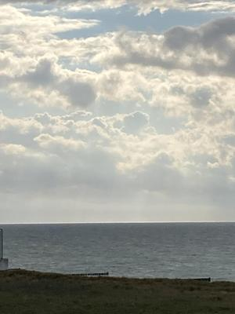
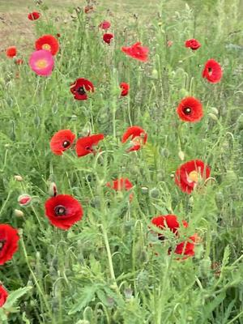
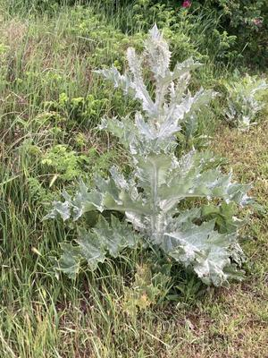
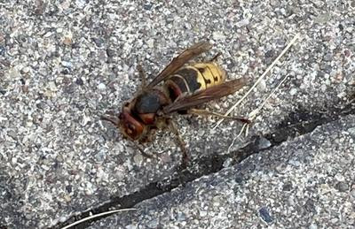
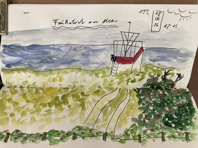
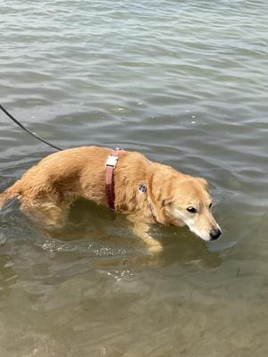
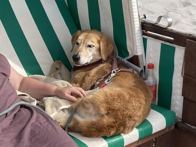

Urlaubsimpressionen von der Ostsee
Heute ist unser erster Urlaubstag an der Ostsee und es ist der 8.6.26, also Zeit für #8sammeln von Susanne Wagner.Acht achtsame Momente sammeln:
1. Um 6:30 Uhr früh startet der Tag. Die Fellnase muss raus. Leider gibt es keine ausgiebigen Strandspaziergänge am leeren Strand. Das schafft die Seniorin nicht mehr. Aber vom Balkon sehe ich das Meer. Auch hinter den Dünen höre ich das Wasser ans Ufer plätschern.
{kind=link}

Blick aufs Meer
2. Wir kommen an einer kleinen Mohnwiese vorbei. Viel Rot mit ein wenig Pink. Farbkleckse für gute Laune.
{kind=link}

Mohnblumenwiese
3. Und immer wieder Stranddisteln. Noch nicht so hoch, aber das wird noch. Diese unverwüstliche Pflanze des Nordens mit ihrer spannenden Struktur. Für mich wie ein Wilkommensgruß.
{kind=link}

Stranddistel
4. An einem Baum schwirren Hornissen um ausgetretenen Baumsaft. Ich weiß nicht ob Einheimische oder Asiatische. Ich trau emich nicht so nah heran. Später finde ich noch ein totes Exemplar auf dem Weg.
{kind=link}

Hornisse
5. Ausgiebig mit Blick aufs Meer frühstücken: Leckeren Sandornsaft und geräucherten Fisch. Da freue ich mich jedes Jahr darauf. Nach dem Frühstück noch die Muße gehabt bei einer Tasse Tee, den Ausblick zu malen. Ich mag diesen langsamen Vormittag.
{kind=link}

Gemalter Ausblick aufs Meer
6. Am Nachmittag geht es an den Strand. Nach 5 Jahren Training und immer wieder Ermutigungen (schließlich ist sie ein Wasserhund- was sie nicht so klar hat). Ist sie heute tatsächlich bis zum Hals ins Wasser gegangen. Sie stand kurz davor zu schwimmen. Mit über 15 Jahren! Wir haben uns gefreut.
{kind=link}

Fellnase im Meer
7. Nach diesem anstrengend Wasserausflug, kam sie nach einiger Zeit im Strandkorb (sie brauchte Sicherheit vor den anderen Hunden) zur Ruhe. Selig schlafend ging die nächste Stunde rum.
{kind=link}

Fellnase im Strandkorb
8. Den Abend beschliessen wir im Garten eines Restaurants bei Zander und Sandornpraline.
Ein schöner erster Tag!
Kommentare